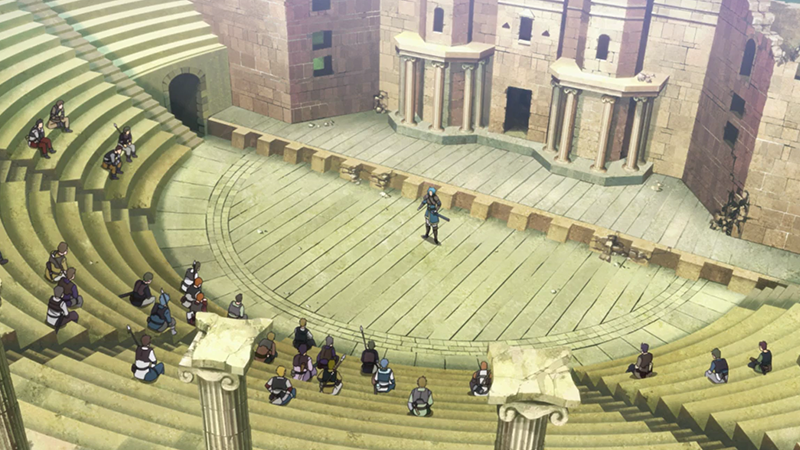
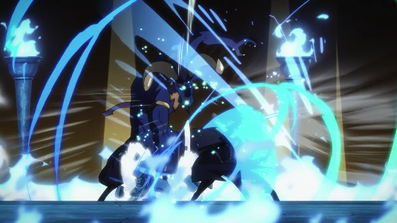
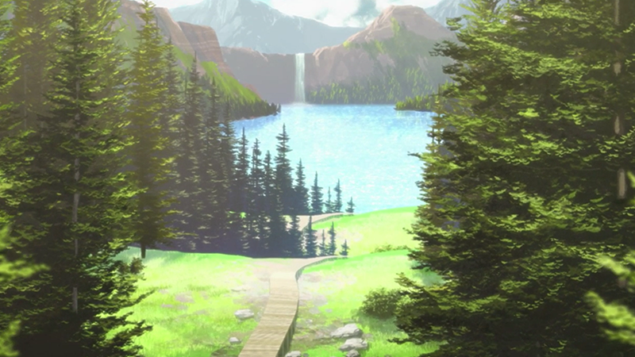
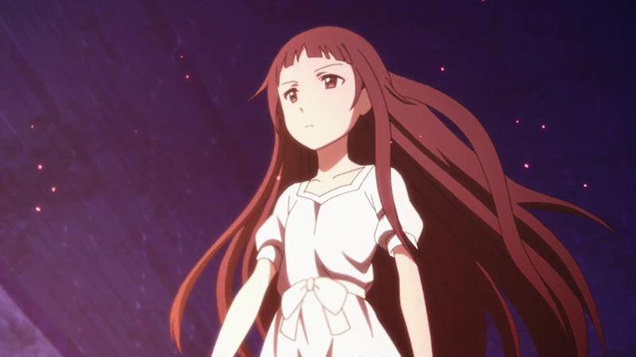
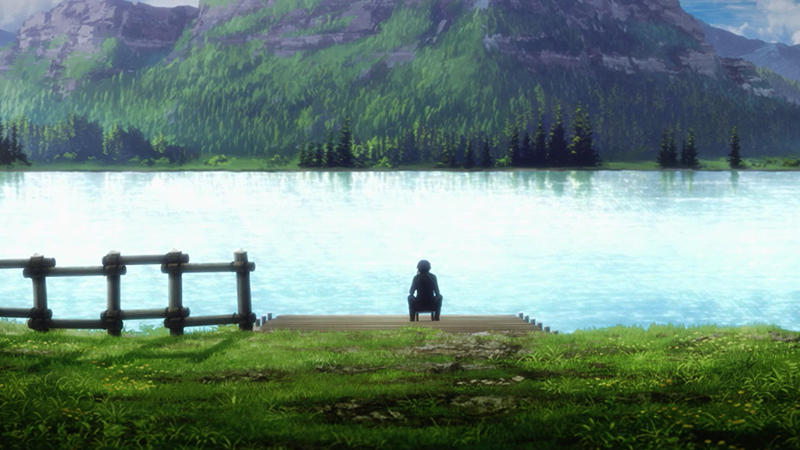
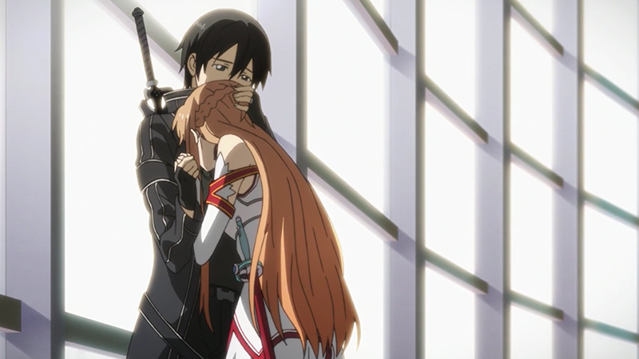
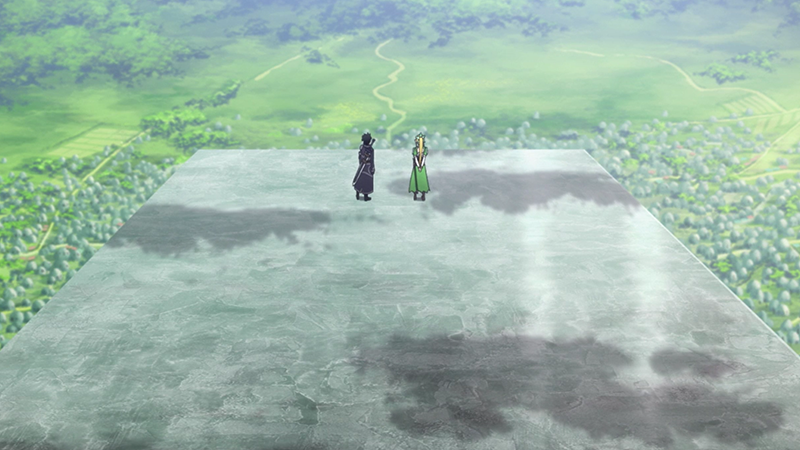
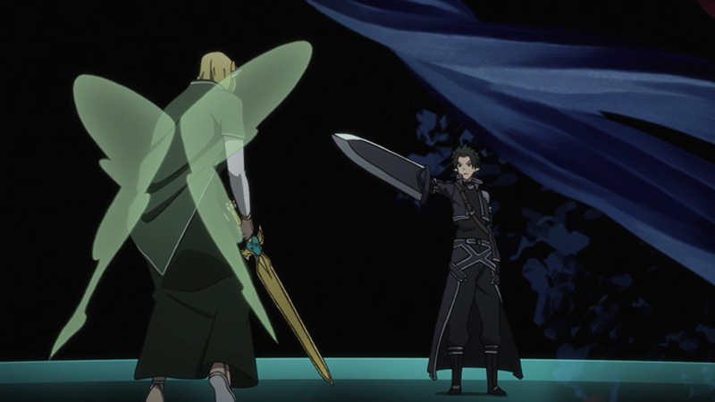

第1集 剑的世界
- 2022年开发出次世代主机『NERvGear』，人类终於将虚拟实境完全实现。使用『NERvGear』创造的真正的VRMMORPG游戏－『SwordArtOnline(SAO)』受到世界瞩目。当SAO正式上线时，包含桐人在内的玩家正尽情地享受假想世界，SAO的开发者－茅场晶彦却向所有玩家宣布：「这款游戏在破关前无法登出，玩家於游戏内死亡也等同於现实肉体的死亡」...
第2集 打击者
- 死亡游戏被迫开始後经过一个月－2022年12月，至少有两千名左右玩家死亡。桐人运用在封测时期的经验单独挑战迷宫，却不得不面临各种致命般的苦战。总层数100层的艾恩葛朗特，连第一层都还无法突破的桐人等人，出现一位号称发现第一层BOSS房间的男人－提亚贝鲁召集玩家们，召开BOSS攻略会议。参加会议的桐人也决定和另一位独行玩家一同组队。

第3集 红鼻子驯鹿
- 桐人解救了被怪物攻击的工会『月夜的黑猫团』。现实世界也互相为朋友的黑猫团温暖芬围深深吸引著桐人，他隐瞒自己是封弊者，成为黑猫团的一员。由於桐人的帮助，弱小工会的黑猫团急速成长，几乎可以追上於最前线战斗的攻略组。但在某一晚，工会中唯一的女孩－小幸突然消失。比大家早一步找到小幸的桐人，得知她害怕死亡...
第4集 黑之剑士
- 和队夥伴吵架并擅自离开的训兽师少女－西莉卡，在森林迷路，并遭到怪物袭击。偶然经过的桐人虽然救了西莉卡一命，使魔－毕娜却死亡了。桐人告诉因失去重要的同伴泪眼汪汪的西莉卡如何复活使魔，并愿意不求回报帮助她。疑惑著为何要帮助自己的西莉卡询问桐人原因，得到的回答却令人意外...

第5集 圈内事件
- 2024年4月，亚丝娜以SAO最强工会『血盟骑士团』副团长身分，站於最前线，并进行至第59层攻略。此时，发生了怪物无法入侵城内的『圈内』杀人事件。目击者的悲鸣驱使桐人和亚丝娜前往现场调查，发现此事件并非PK决斗造成的。担心出现未知PK技能的亚丝娜决定和桐人一起调查事件。
第6集 幻象的复仇者
- 正当桐人和亚丝娜探究系统不可能出现的圈内杀人事件时，新的被害者遭杀害事件活生生的在两人面前发生。凯因兹等被害者共通点皆为已解散的工会『金苹果』的成员。前『金苹果』成员－舒密特认为，这是以前的工会已死亡的会长－葛莉塞达的幽灵所进行的复仇。到底这个电脑世界真的存在幽灵吗？
第7集 心的温度
- 铁匠莉兹贝特所经营的武器店来了一位不在乎预算，只希望能造出最强之剑的客人。为了作为打造新剑参考，拿出稀有魔剑的客人正是桐人。对自己的手腕非常有自信的莉兹贝特拿出自己当下制造出的最强之剑，让桐人测试剑的耐久力却不慎被折断。被桐人无心的话语激怒的莉兹回嘴，若是能得到稀有金属的话，就一定能锻造出让桐人满意的剑。

第8集 黑白剑舞
- 2024年4月，亚丝娜以SAO最强工会『血盟骑士团』副团长身分，站於最前线，并进行至第59层攻略。此时，发生了怪物无法入侵城内的『圈内』杀人事件。目击者的悲鸣驱使桐人和亚丝娜前往现场调查，发现此事件并非PK决斗造成的。担心出现未知PK技能的亚丝娜决定和桐人一起调查事件。

第9集 青眼恶魔
- 和亚丝娜组队的桐人突破第74层迷宫，发现了BOSS的房间。为了得到攻略情报，两人瞥见强大的BOSS後随即撤退，并在安全区域内见到SAO人数众多的工会『军队』，为了回应率领军队的男人－柯巴兹的要求，桐人提供BOSS房间的情报给他。同时警告他们不要贸然挑战BOSS，但柯巴兹并未将桐人的警告听进耳里...

第10集 真红的杀意
- 亚丝娜打算暂时远离血盟骑士团，桐人赌上亚丝娜的自由，决定和艾恩葛朗特中号称最强的男人，血盟骑士团团长－西兹克利夫决斗。亲身体会过团长的强悍的亚丝娜向桐人提出忠告桐人则笑著表示不会这麼简单就战败。在广大观众注视之下，使用特殊技能『神圣剑』的希兹克莉夫和使用『二刀流』的桐人一对一决斗揭开序幕...
第11集 晨露的少女
- 由於克拉帝尔的事件，让桐人和亚丝娜的羁绊更加深刻，两人决定结婚。亚丝娜暂时退出血盟骑士团，和桐人一同在第22层的湖畔旁的木屋中生活。他们远离战斗的喧嚣，过著写意舒适的生活。有一天，因为幽灵传闻而前往森林探查的两人，在阴暗的森林中找到一位少女。虽然他们暂时收留眼前倒下的少女，但少女似乎失去记忆...

第12集 结衣的心
- 为了寻找结衣的监护人，桐人和亚丝娜前往『起始之镇』，并且得知军队管理者－辛卡被丢置在迷宫深处，决定一同救出辛卡。桐人和亚丝娜便与委托者－由莉耶儿以及吵闹著要跟随而来的结衣，四人潜入第一层的地下迷宫。他们在安全区域发现了正在避难的辛卡，却未能预料到在前方有著强大的敌人等著。了解自己无法对付敌人的桐人，要求亚丝娜和结衣等人先行逃走...


第13集 地狱的深渊
- 在湖畔钓鱼的桐人被年长的玩家－西田关注。与将钓鱼作为兴趣的西田意气相投的桐人，决定帮忙钓起湖之主人。经常在最前线战斗的桐人和亚丝娜藉由认识了西田，感受到许多的普通玩家正在努力的适应SAO世界。深为顶尖玩家的两人深感自己背负的责任时，桐人收到一封留言...


第14集 世界的终焉
- 2024年11月，第75层的BOSS攻略战比想像中还要惨烈。在转移水晶无法使用的空间中，经历百战的玩家们一个个丧命。虽然众人费尽千辛万苦击破BOSS，攻略组的大家却因为过重的牺牲而面有难色。而希兹克利夫正静静地看著失落的玩家们。
第15集 归还
- 历经与希兹克利夫的死斗，桐人，也就是桐谷和人回到了现实世界。同时却有自死亡游戏残存下来，包含亚丝娜在内的生还者并未恢复意识，深深的沉睡著。自此2个月後，前往结城明日奈的病房探望她的和人，遇到了明日奈的父亲－彰三，以及彰三的部下－须乡伸之。和人得知昏睡状态的明日奈将於一周後与须乡结婚...
第16集 妖精们的国度
- 前往艾基尔的店面的和人，满脑子都是艾基尔拿出的VRMMORPG游戏『AlfheimOnline』中拍到的影像截图。影像中拍到的女性神似亚丝娜。而ALO游戏的开芳公司更是须乡所属的游戏公司，和人确定亚丝娜被困在游戏中。和人马上登入ALO进入游戏，没想到SAO的纪录不知为何覆盖到ALO的角色上了。
第17集 被囚禁的女王
- 风精灵莉法遭到正在狩猎玩家的火精灵攻击，并且被守护精灵的桐人所救。带著化为导航精灵的结衣的桐人虽然攻击技巧高明，却对ALO世界一无所知。莉法为了感谢桐人的救助，决定带著桐人前往风精灵首都－司伊鲁班。
第18集 前往世界树
- 莉法决定陪著桐人一同前往位於阿尔普海姆中心的『世界树』。但是，决定离开斯伊鲁班，展开旅行的莉法先前的组队同伴ガ西格鲁特阻挡在前。西格鲁特不停的贬低桐人，痛恨被束缚的莉法盛怒之下便宣称要和桐人组队。一方面被囚禁在世界树顶端的亚斯娜，无法得知桐人的生死与否，拼命忍耐著自己的不安与恐惧...

第19集 鲁格路回廊
- 以世界树为目标的桐人等人进入了巨大洞窟『鲁古鲁回廊』时，莉法收到一封从友人－雷根寄来的留言。留言内容急促地警告莉法将有事发生，在此同时，火精灵的部队也开始接近桐人等人。被敌人追赶，不得不与之战斗的桐人请求莉法帮忙恢复HP，单身影支深入敌阵。但是，敌人以万全姿态准备好对付桐人的策略，魔法攻击与防备完善的前锋阻挡著桐人。


第20集 猛炎之将
- 为了攻略最终任务，风精灵与猫妖私下召开领主会议，却因为内部有人通风报信，使他们遭到火精灵大军袭击。在绝望危机下，桐人赶在双方开战前一刻自称水精灵/守护精灵同盟大使，要求火精灵停战。面对桐人如此天大的谎言，火精灵的指挥官－尤金将军提出某个交换条件...
第21集 Alfheim的真实
- 终於抵达世界树根部最大的都市『央都阿鲁恩』地桐人等人。但是，由於系统定期维护的关系，桐人和莉法决定隔天再继续上线攻略。一方面现实世界中，和人的妹妹－直叶正烦恼著自己对哥哥淡淡的思念。为了正视自己的心情，直叶决定请求哥哥带她一起去见病房中的明日奈。
第22集 Grand Quest
- 结衣感觉到亚丝娜的ID资料，告知桐人亚丝娜的位置就在世界树的正上方时，桐人头也不回的打算展翅飞上顶端，却因为系统设立的障壁阻碍，使他连最下方的树枝都无法到达。此外，亚丝娜发现桐人等人的存在，她怀抱希望地将某个道具空投而下。决定夺回亚丝娜的桐人也决定挑战往世界树顶端唯一的道路－难攻不落的最终任务。
第23集 羁绊
- 发现莉法真实身分为直叶的和人大为震惊，同时也知道直叶不为人知的思念，了解自己无意识的行为深深伤害了妹妹後不知所措。即使如此，和人依然告诉直叶自己将会在『央都阿鲁恩』等著她，并再度登入ALO。直叶和和人都对於自己伤害了对方而愧疚不已，直叶虽然再次登入ALO，却失去和桐人见面的勇气...
第24集 镀金的勇士
- 藉由风精灵和猫妖的协助，桐人终於突破了最终任务。桐人和结衣一同抵达世界树的顶端，终於与亚丝娜再次相会。桐人虽然想马上和亚丝娜回到现实世界，结衣却发现亚丝娜被复杂的密码拘束著，登出需要藉由系统控制台才能成功。为时已晚，须乡，也就是奥伯龙的魔手已开始袭击桐人等人...

第25集 世界的种子
- 和奥伯龙分出胜负之後，桐人发誓将在现实世界与亚丝娜再会，并登出了ALO。一回到现实世界便马上赶去明日奈的医院的和人，却撞见了在医院门口等著他的须乡。因为憎恨与剧痛而面目歪斜的须乡为了复仇，将刀握在手中袭击桐人。第一次在现实世界面临死亡危机地和人，无能为力的缩起身体...